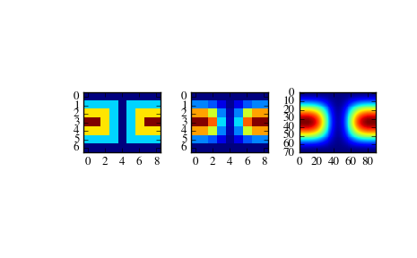

scipy.interpolate.SmoothSphereBivariateSpline¶
- class scipy.interpolate.SmoothSphereBivariateSpline(theta, phi, r, w=None, s=0.0, eps=1e-16)[source]¶
Smooth bivariate spline approximation in spherical coordinates.
New in version 0.11.0.
Parameters: theta, phi, r : array_like
1-D sequences of data points (order is not important). Coordinates must be given in radians. Theta must lie within the interval (0, pi), and phi must lie within the interval (0, 2pi).
w : array_like, optional
Positive 1-D sequence of weights.
s : float, optional
Positive smoothing factor defined for estimation condition: sum((w(i)*(r(i) - s(theta(i), phi(i))))**2, axis=0) <= s Default s=len(w) which should be a good value if 1/w[i] is an estimate of the standard deviation of r[i].
eps : float, optional
A threshold for determining the effective rank of an over-determined linear system of equations. eps should have a value between 0 and 1, the default is 1e-16.
Notes
For more information, see the FITPACK site about this function.
Examples
Suppose we have global data on a coarse grid (the input data does not have to be on a grid):
>>> theta = np.linspace(0., np.pi, 7) >>> phi = np.linspace(0., 2*np.pi, 9) >>> data = np.empty((theta.shape[0], phi.shape[0])) >>> data[:,0], data[0,:], data[-1,:] = 0., 0., 0. >>> data[1:-1,1], data[1:-1,-1] = 1., 1. >>> data[1,1:-1], data[-2,1:-1] = 1., 1. >>> data[2:-2,2], data[2:-2,-2] = 2., 2. >>> data[2,2:-2], data[-3,2:-2] = 2., 2. >>> data[3,3:-2] = 3. >>> data = np.roll(data, 4, 1)
We need to set up the interpolator object
>>> lats, lons = np.meshgrid(theta, phi) >>> from scipy.interpolate import SmoothSphereBivariateSpline >>> lut = SmoothSphereBivariateSpline(lats.ravel(), lons.ravel(), ... data.T.ravel(), s=3.5)
As a first test, we’ll see what the algorithm returns when run on the input coordinates
>>> data_orig = lut(theta, phi)
Finally we interpolate the data to a finer grid
>>> fine_lats = np.linspace(0., np.pi, 70) >>> fine_lons = np.linspace(0., 2 * np.pi, 90)
>>> data_smth = lut(fine_lats, fine_lons)
>>> import matplotlib.pyplot as plt >>> fig = plt.figure() >>> ax1 = fig.add_subplot(131) >>> ax1.imshow(data, interpolation='nearest') >>> ax2 = fig.add_subplot(132) >>> ax2.imshow(data_orig, interpolation='nearest') >>> ax3 = fig.add_subplot(133) >>> ax3.imshow(data_smth, interpolation='nearest') >>> plt.show()
Methods
__call__(theta, phi[, dtheta, dphi, grid]) Evaluate the spline or its derivatives at given positions. ev(theta, phi[, dtheta, dphi]) Evaluate the spline at points get_coeffs() Return spline coefficients. get_knots() Return a tuple (tx,ty) where tx,ty contain knots positions of the spline with respect to x-, y-variable, respectively. get_residual() Return weighted sum of squared residuals of the spline